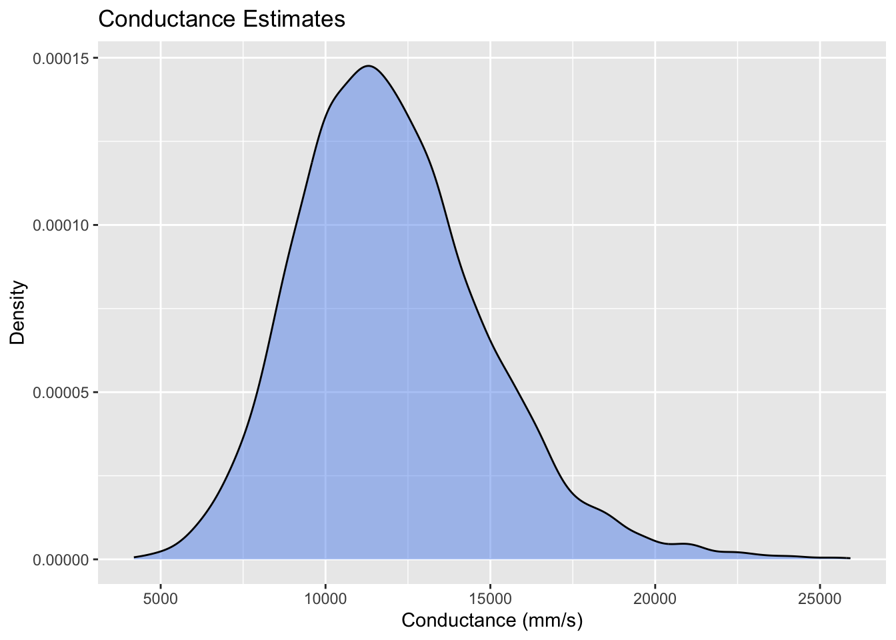
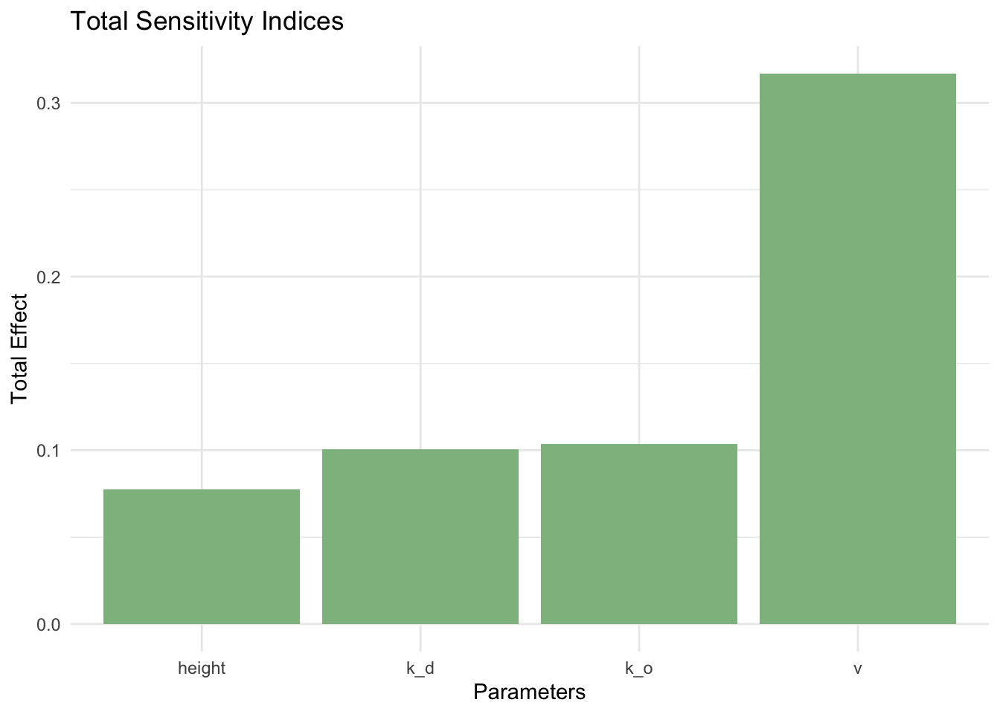
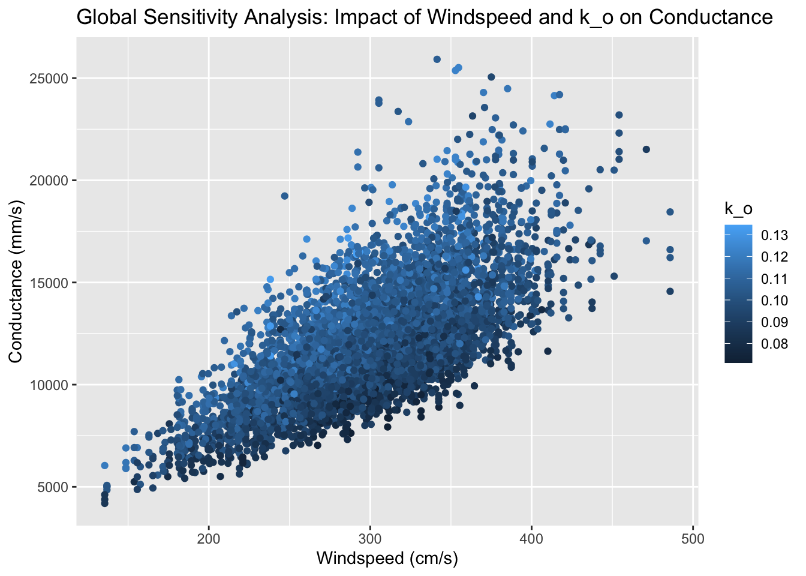

# load libraries
library(sensitivity)
library(tidyverse)
library(purrr)
library(ggpubr)Link to GitHub repository
Setup
Source atmospheric conductance function
For the purposes of showing the complete documentation for the function that I am working with, I have included the full contents of the R script that was sourced when I originally conducted this analysis.
#' Compute Atmospheric Conductance
#'
#' This function atmospheric conductance as a function of windspeed, and vegetation cahracteristics
#' @param v windspeed (m/s)
#' @param height vegetation height (m)
#' @param zm measurement height of wind (m) (default 2m)
#' @param k_o scalar for roughness (default 0.1)
#' @param k_d scalar for zero plane displacement (default 0.7)
#' @author Naomi
#'
#' @return Conductance (mm/s)
Catm = function(v, height, k_o=0.1, k_d=0.7) {
zm_add = 2
zd = k_d*height
zo = k_o*height
zm = height+zm_add
zd = ifelse(zd < 0, 0, zd)
Ca = ifelse(zo > 0,
v / (6.25*log((zm-zd)/zo)**2),0)
# convert to mm
Ca = Ca*1000
return(Ca)
}Generate input/parameter values
set.seed(123)
# generate input/parameter samples
np <- 1000
k_o <- rnorm(np, mean=0.1, sd=0.1*0.1)
k_d <- rnorm(np, mean=0.7, sd=0.7*0.1)
v <- rnorm(np, mean=300, sd=50)
height <- runif(np, min=3.5, max=5.5)
X1 <- cbind.data.frame(k_o, k_d, v, height=height)
# generate another set of input/parameter samples
k_o <- rnorm(np, mean=0.1, sd=0.1*0.1)
k_d <- rnorm(np, mean=0.7, sd=0.7*0.1)
v <- rnorm(np, mean=300, sd=50)
height <- runif(np, min=3.5, max=5.5)
X2 <- cbind.data.frame(k_o, k_d, v, height=height)Run atmospheric conductance model
# use Jansen approach implemented by sobolSalt
sens_Catm_Sobol <- sobolSalt(model = NULL, X1, X2, nboot = 100)
# define input/parameters
parms <- as.data.frame(sens_Catm_Sobol$X)
colnames(parms) <- colnames(X1)
# run the model
res = pmap_dbl(parms, Catm)
# update the sensitivity analysis object with the results
sens_Catm_Sobol <- sensitivity::tell(sens_Catm_Sobol, res, res.names = "ga")Plot conductance estimates
# plot distribution of conductance estimates
ggplot(data = data.frame(Ca = res), aes(x = Ca)) +
geom_density(fill="cornflowerblue", alpha=0.5) +
labs(title = "Conductance Estimates", x = "Conductance (mm/s)", y = "Density")
Plot total sensitivity indices of all inputs/parameters
# calculate total sensitivity indices
total_sensitivity <- apply(sens_Catm_Sobol$T, 1, mean)
# plot total sensitivity indices to identify second most influential parameter
sensitivity_df <- data.frame(
Parameters = colnames(X1),
TotalEffect = total_sensitivity
)
ggplot(sensitivity_df, aes(x = Parameters, y = TotalEffect)) +
geom_bar(stat = "identity", fill = "darkseagreen") +
labs(title = "Total Sensitivity Indices", y = "Total Effect", x = "Parameters") +
theme_minimal()
Plot conductance against two most sensitive inputs/parameters
# plot two most sensitive inputs/parameters
both = cbind.data.frame(parms, gs=sens_Catm_Sobol$y)
ggplot(both, aes(v,gs, col=k_o))+geom_point()+labs(y="Conductance (mm/s)", x="Windspeed (cm/s)", title="Global Sensitivity Analysis: Impact of Windspeed and k_o on Conductance")
Estimate Sobol indices
# add parameter names to main effect and total sensitivity indices
row.names(sens_Catm_Sobol$S) = colnames(parms)
row.names(sens_Catm_Sobol$T) = colnames(parms)
# print all sobol indices
print(sens_Catm_Sobol)
Call:
sobolSalt(model = NULL, X1 = X1, X2 = X2, nboot = 100)
Model runs: 6000
Model variance: 8417654
First order indices:
original bias std. error min. c.i. max. c.i.
k_o 0.2093548 0.0002043903 0.03498043 0.14767984 0.2931129
k_d 0.1993786 0.0042697793 0.03682199 0.12276724 0.2778684
v 0.4753836 -0.0016100511 0.02071453 0.44440102 0.5241987
height 0.1043329 0.0003478314 0.03216599 0.03546999 0.1750344
Total indices:
original bias std. error min. c.i. max. c.i.
k_o 0.1690400 0.0004720644 0.010837170 0.1477810 0.1895922
k_d 0.1646352 0.0005778152 0.010384375 0.1446359 0.1836950
v 0.5199054 -0.0007921543 0.027909766 0.4669257 0.5705891
height 0.1276424 0.0003586299 0.007147771 0.1114200 0.1406503Conclusion
In this setting (compared to the setting looked at in class), windspeed was higher and less variable, while vegetation was shorter. Comparing the two sensitivity analyses, we can see that these differences in conditions was associated with a decrease in model variance, as the model variance determined here (~8.4 million) was less than half the variance we found in class (~19.7 million). In addition, for the model we look at here, the total sensitivity index for k_d is significantly lower, while that for k_o, windspeed, and height are significantly higher. Because the total sensitivity index for windspeed is significantly higher, this tells us that atmospheric conductance is more sensitive to windspeed in areas where windspeed is high and less variable and vegetation is shorter. However, the lower model variance tells us that overall, atmospheric conductance has less variation in these conditions.
Citation
BibTeX citation:
@online{ghanadan2024,
author = {Ghanadan, Linus},
title = {Global {Sensitivity} {Analysis} for an {Atmospheric}
{Conductance} {Model}},
date = {2024-06-07},
url = {https://linusghanadan.github.io/blog/2024-6-7-post/},
langid = {en}
}
For attribution, please cite this work as:
Ghanadan, Linus. 2024. “Global Sensitivity Analysis for an
Atmospheric Conductance Model.” June 7, 2024. https://linusghanadan.github.io/blog/2024-6-7-post/.